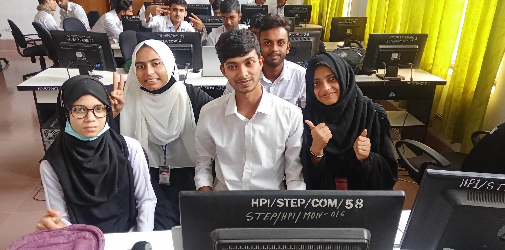
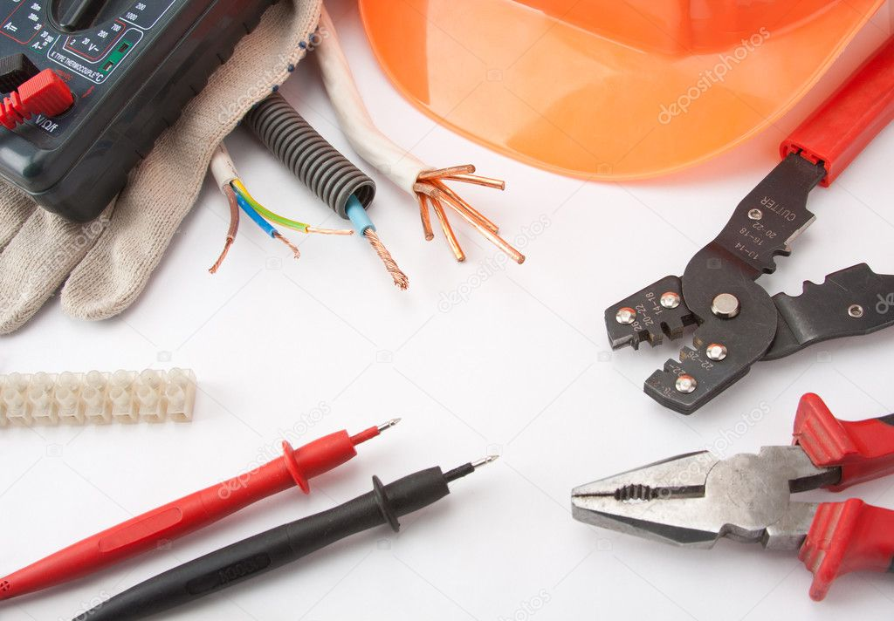

Notice
- 1.কম্পিউটার ডিপার্টমেন্টের দুই ক্যাপ্টেনকে বহিষ্কার করা হলো
- 2.আগামী পহেলা বৈশাখ থেকে পরীক্ষা শুরু হইবে
- 3.আগের ছুটি বাতিল করা হইল
- 4.আজ হতে সামনের 10 দিন পলিটেকনিক বন্ধ থাকিবে
Our Department Pictures
CST
ET
CT
AT

Our Teachers Pictures
Teaching is one of the noblest professions
anyone can opt for, and those who do it are called.
Teachers are often very dedicated and knowledgeable,
and they gladly pour their knowledge for the better
education of children. Without teachers, we would be lost
because our teachers are equally important in our lives as the
North Star is for a sailor.